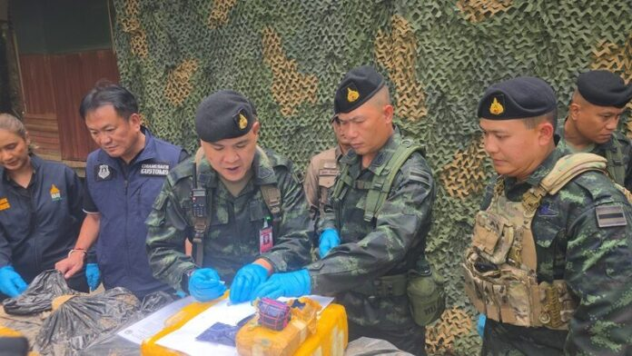

ทหารปะทะเดือด คาราวานแบกเป้ขนยาบ้าเดินลัดเลาะป่าข้ามชายแดนเข้าไทย ยึดได้เฉียด 2 ล้านเม็ด
อัปเดตเมื่อ: Aug 8, 2026 · Kori Care Portal

🇹🇭 คู่มือช่วยเหลือ & บริการในเกาหลี (Kori Care Link)
ค้นหาสถานที่สำคัญ รพ. ต่างชาติ ร้านอาหารไทย คำนวณเงินชดเชย และบริการ 1345 ได้ในที่เดียว!
เข้าสู่พอร์ทัล Kori Care Link ➔
📌 สรุปข่าวสำคัญ (Executive Summary)
ทหารกองกำลังผาเมือง ปะทะขบวนการลักลอบขนยาเสพติด 10-15 คน แบกกระสอบเดินลัดเลาะตามเส้นทางธรรมชาติ ในพื้นที่เชียงแสน จ.เชียงราย ยึดของกลางเกือบ 2 ล้านเม็ด เมื่อเวลา 13.30 น.วันที่ 8 ส
Fast updates on Thailand's trending topics
🔗 View Original (อ่านข่าวฉบับเต็มจากแหล่งข่าวต้นฉบับ) ➔
🇹🇭 คู่มือช่วยเหลือ & บริการในเกาหลี (Kori Care Link)
ค้นหาสถานที่สำคัญ รพ. ต่างชาติ ร้านอาหารไทย คำนวณเงินชดเชย และบริการ 1345 ได้ในที่เดียว!
เข้าสู่พอร์ทัล Kori Care Link ➔
⬅ กลับสู่หน้าหลัก Kori Care Link (돌아가기)